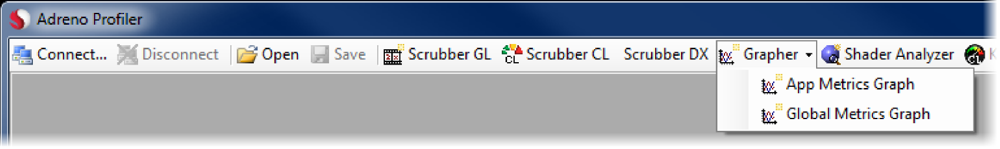
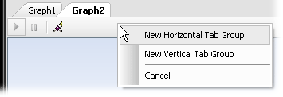
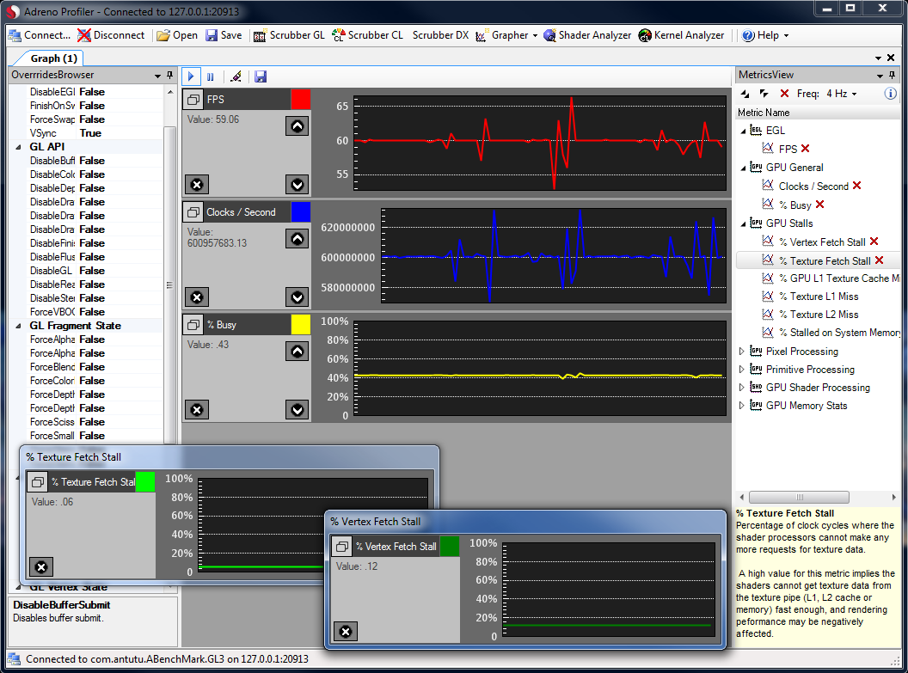
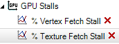
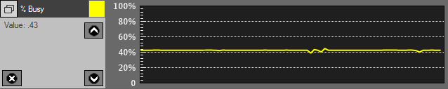
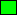
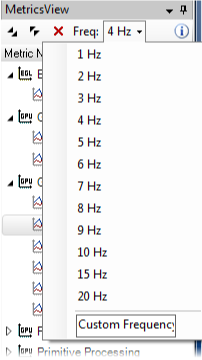

This tutorial explains how to stream and view real-time performance metrics from your mobile device.
There are two types of Graphers that can be used depending on the requirements. 'App Metrics Graph' requires an application running and will display metrics related to that process only. To open an 'App Metrics Graph' you will need to connect to a device. 'Global Metrics Graph' doesn't require an application running as it gathers metrics for the whole device, this button will enable if global metrics are supported by the current device.

Note that multiple graphs can be created and viewed side-by-side. To create a new document pane, drag a document tab a short distance, then let go (Note: this only applies to the Windows version of Adreno Profiler). Choose an orientation from the menu that appears.

Once the Grapher appears, switch to the Metrics Browser. A list of performance metrics is presented.
The bottom portion of the Metrics Browser displays information about the selected metric.
• Read this information carefully! Performance issues can often be quickly identified just by observing real-time metrics.

To begin capturing an individual metric, drag its label from the Metrics Browser and drop it on to a Grapher document. A metric line control will be added to the grapher with the chosen metric.
• Note that due to concurrency limitations in the embedded CPU and GPU, there are limits to how many metrics can be simultaneously enabled. As a result, turning on a metric may cause others to become unavailable - Adreno Profiler will highlight those unavailable metrics in red.
To stop capturing a metric, click the close button beside the metric in Metrics Browser or the close button  within the metric line control shown in Grapher. A list of Grapher documents currently plotting the metric
will appear; select the Grapher you wish to cease plotting the metric.
within the metric line control shown in Grapher. A list of Grapher documents currently plotting the metric
will appear; select the Grapher you wish to cease plotting the metric.

Each metric line is a separate control and has controls that can affect its appereance, order or layout. The various operations permitted per metric line are the following:

- Close/Disable this metric.
-  Change color of the metric in graph.
- Undock this metric from the grapher into its own window or dock back to Grapher.
- Move this metric line up or down within the Grapher layout.
As real-time metrics are plotting, Adreno Profiler provides ways to override the behavior of the embedded application. Experiment with these overrides to find your app's performance bottlenecks.
1 - You can enable and disable basic OpenGLES render state using the Overrides Browser.
2 - For OpenGLES v2.0 applications, the GLSL shaders captured by a Scrubber can be edited and then overridden on the device while the embedded application is running, giving immediate performance feedback for shader optimizations.
On Adreno 200+ series devices, the Grapher metrics report frequency can be changed. To do so, click on the button labeled "Freq" on the toolbar.
